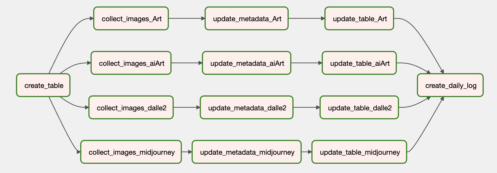
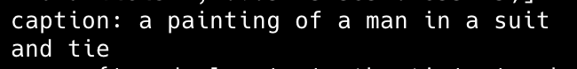
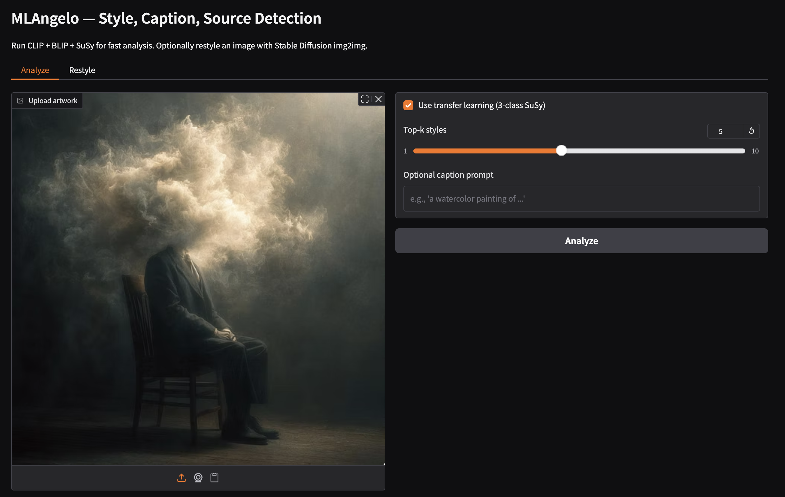
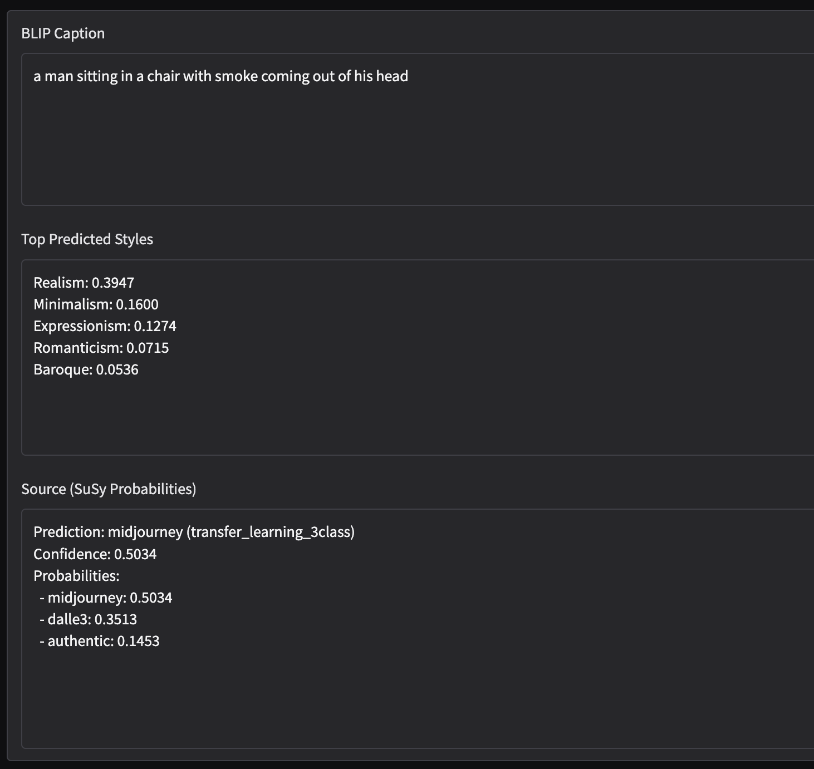
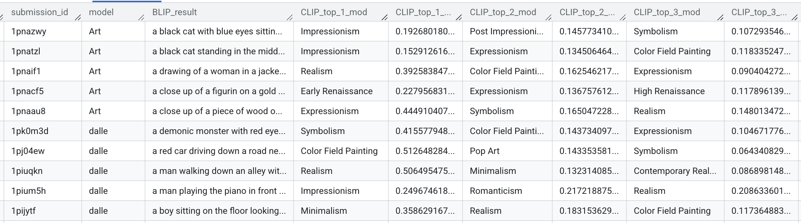

End-to-end pipeline for large-scale AI-art detection, style analysis, captioning, and optional restyling.
The spread of high-fidelity text-to-image models raised practical trust issues for online visual ecosystems: attribution, misuse, and authenticity ambiguity. Existing detectors trained on curated benchmarks showed weak transfer to noisy social data.
The core question was whether an end-to-end, continuously evaluated system could maintain reliable detection performance on Reddit while also surfacing useful style and semantic context for human review.
Open social streams are weakly labeled and constantly shifting; single-model accuracy alone is not enough for operational trust.
Data strategy focused on independent fine-tuning sets plus real-world Reddit test streams from model-specific communities.
| Subreddit | Time Span of 1000 Posts (days) | Posts / Day |
| r/dalle2 | 779 | 1.28 |
| r/midjourney | 28 | 35.71 |
| r/aiArt | 9 | 111.11 |
Figure 1: Example Reddit DALL-E image (sample 1).
Figure 2: Example Reddit DALL-E image (sample 2).
Figure 3: Example Reddit DALL-E image (sample 3) showing non-artistic variance in the test stream.
The pipeline has two major layers: automated data engineering and multimodal inference. Airflow orchestrates Reddit collection, deduplication by submission ID, and metadata updates to BigQuery. Inference then runs CLIP (style), BLIP (caption), and SuSy (source).
Scheduled collectors ingest new images, persist content to cloud storage, and append structured metadata tables for tracking and evaluation.
SuSy was adapted from 6-class outputs to a 3-class projection layer, then fine-tuned end-to-end for Reddit-style domain adaptation.
Style rankings, captions, and class probabilities are surfaced together through a Gradio UI for rapid qualitative validation.

Figure 4: Apache Airflow DAG for collection, metadata updates, table updates, and daily logging.
Baseline CNNs (ResNet variants) underperformed on Reddit’s diverse artistic distributions. BLIP outperformed earlier captioning attempts on semantic richness, and CLIP prompt engineering improved style ranking stability. The strongest gains came from SuSy transfer learning under domain shift.
| Class / Model | Original SuSy | Finetuned SuSy |
|---|---|---|
| Authentic | 68.22% | 57.71% |
| DALL-E | 0.32% | 14.38% |
| MidJourney | 0.28% | 43.37% |
Finetuning significantly increased AI-class detection quality on Reddit-like data, indicating that domain-adaptive heads are critical for real deployment.

Figure 6: BLIP-generated captions showing semantically rich image descriptions used for interpretability and restyling prompts.
Figure 8: Stable Diffusion XL image-to-image restyling guided by BLIP captions while preserving semantic structure.
M(iche)Langelo is implemented in Python with PyTorch, Transformers, OpenCLIP, Diffusers, PRAW, Airflow, and BigQuery. The architecture is modular, enabling continuous collection, scalable storage, and iterative model updates.
Airflow + PRAW keep datasets fresh from active Reddit communities.
CLIP, BLIP, and SuSy provide style, semantic, and source signals in one pass.
BigQuery stores metadata, predictions, confidence scores, and execution traces.
Gradio UI enables rapid qualitative review and restyling workflows.

Figure 11: Interactive analysis UI with model options and execution controls.

Figure 12: Structured output panel combining caption, style ranking, and source-detection probabilities.

Figure 13: BigQuery sample rows showing pipeline outputs and model predictions.
Keep the transfer-learned SuSy pipeline in production for social streams, with recurring re-training, confidence calibration, and richer supervision signals beyond subreddit labels.